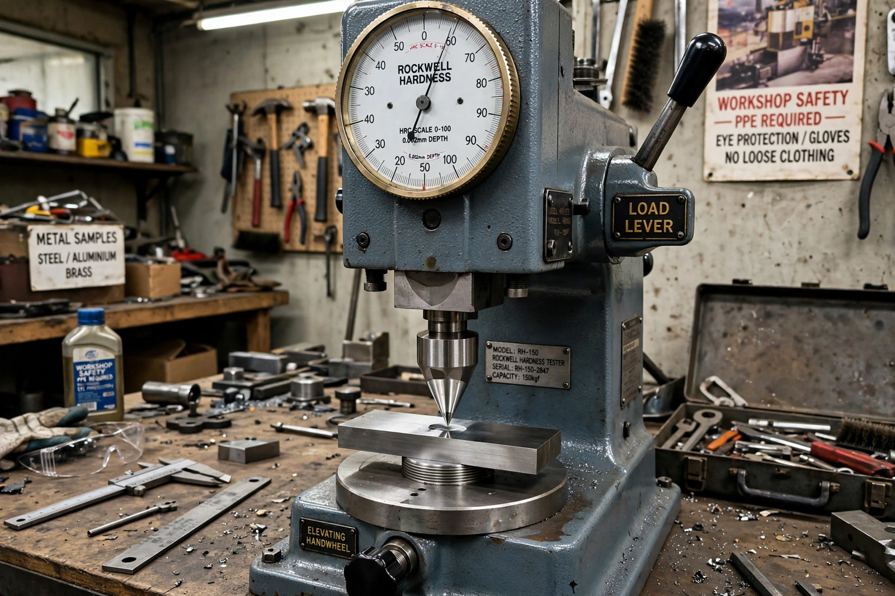

From Wikipedia, the free encyclopedia
The Rockwell scale is a hardness scale based on indentation hardness of a material. The Rockwell test measures the depth of penetration of an indenter under a large load (major load) compared to the penetration made by a preload (minor load). There are different scales, denoted by a single letter, that use different loads or indenters. The result is a dimensionless number noted as HRA, HRB, HRC, etc., where the last letter is the respective Rockwell scale.

The indenter is forced into the material under a minor load (typically 10 kgf), then a major load is applied and released. The difference in penetration depth between the minor-load position and after the major load gives the Rockwell hardness number. Unlike the Brinell and Vickers methods, no optical measurement of the impression size is needed, making Rockwell testing fast and suitable for production environments.
| Scale | Indenter | Major load (kgf) | Typical use |
|---|---|---|---|
| A (HRA) | Diamond cone | 60 | Cemented carbides, thin steel |
| B (HRB) | 1/16-inch steel ball | 100 | Copper alloys, soft steel, aluminium |
| C (HRC) | Diamond cone | 150 | Hardened steel |
| D (HRD) | Diamond cone | 100 | Thin steel, medium case-hardened steel |
The most commonly used scales are B and C: HRB for softer materials (maximum ~100) and HRC for harder steels (roughly 20–70). Values do not convert exactly between scales; approximate conversion charts to Brinell and Vickers hardness exist in standards such as ASTM E140.
See also: Indentation, Vickers hardness test.